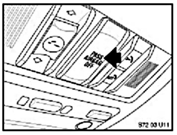

Restraints - Passenger Air Bag Status Lamp Information
SI B 72 06 03Safety Restraint Systems
November 2006
Technical Service
This Service Information bulletin supersedes S.I. B72 06 03 dated October 2004.
[NEW] designates changes to this revision
SUBJECT
Passenger Airbag Status Lamp
MODEL
All models with a Passenger Airbag Status Lamp.
INFORMATION
This bulletin is intended to address customer questions you may receive regarding the operation of the Passenger Airbag Status Lamp after they have consulted the Owner's Manual.
The Passenger Airbag Status Lamp is installed to meet a National Highway Traffic Safety Administration (NHTSA) regulation and, except for Z4, is located in the headliner near the interior light (The E60 installation is shown in the illustration). On the Z4, the status lamp is located on the center console.

The Passenger Airbag Status Lamp illuminates to show that the front passenger airbag is OFF (not active). The Passenger Status Airbag Lamp. The lamp illuminates with constant brightness regardless of day or night.
NEW For E60/E65/E66 to 9/04, E83 to 9/05 and Z4 to 10/04, the lamp is illuminated for two conditions:
- With the ignition in the "ON" position AND the passenger seat unoccupied.
- With the ignition in the "ON" position AND when a child in a rear facing child-restraint system is recognized.
The lamp illuminates briefly during startup and stays illuminated if a child in a rear facing child-restraint system is recognized or if the passenger seat is unoccupied. The lamp goes out if an adult or a child of sufficient size is recognized.
[NEW] For all other vehicles, the lamp is illuminated:
- Only with the ignition in the "ON" position AND when a child in a rear facing child-restraint system is recognized.
The lamp illuminates briefly during startup and stays illuminated if a child in a rear facing child-restraint system is recognized. The lamp goes out if an adult or a child of sufficient size is recognized, or if the passenger seat is unoccupied.